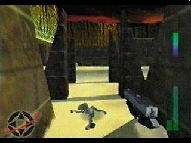
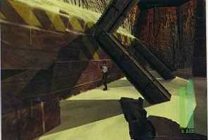
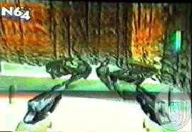

|
| Perfect
Dark Version Beta : Zone 51 Infiltration |
| Comme
vous le verrez, il y avait à l'origine des Roswells dans cette
Mission. Certains étaient de votre coté, d'autres non.
De plus, il semble que les Missions Infiltration et Sauvetage étaient
reliées dans un seul et meme Niveau. Vous deviez sortir de
la Zone avec Elvis avec une Armée de Roswells aux fesses !
Commençons avec les images de Roswells. On reconnait aisemment
Elvis sur la Photo du Milieu... Notez égalemment les Barres
de Munitions bizarres (voir Section Munitions). |



Ci-dessous à Gauche, voici le Garde permettant d'avoir les Doubles Magsec 4, que l'on trouve beaucoup plus loin dans la Mission, sortant d'une Salle en Contrebas. Ci-dessous à Droite, 2 Hoverbikes ! De plus, ils sont à l'exterieur. Certainemment un rapport avec le Mode Cooperative ? Enfin, sur la Photo ci-dessous, il manque la Grosse Porte sur la Droite. |
 
Ci-dessous à Gauche, il manque la Sentinelle. C'est une des Sentinelles les plus lourdes du jeu, et Rare a du la rajouter pour rendre la Niveau plus dur ! Ci-dessous à Droite, pas d'Intercepteurs dans les Boxes. Meme détruits on les voit normalemment. Notez le ZMG 9mm au Sol (Section Armes). |


Ci-dessous, Deux Choses. Il manque la Porte sur la Photo de Gauche, du moins on le dirait. Sur la Photo de milieu, la Porte est carrément ouverte ! Normalemment on ne peut PAS ouvrir cette porte. C'est celle qui sert à Joanna à la Fin de la Mission Evasion quand elle prend le Hoverbike. Notez les Gardes dans la Salle... Bizarre ! |


Ci-dessous,
le Texte de Jonathan apparait plus tard.
Normalemment, on l'entend dans l'Ascenseur juste avant.

C-dessous, encore un Truc n'apparaissant pas dans le Jeu. Je suppose qu'il apparaissait dans cette Mission, vu le Coloris et la Texture. Entrez le Code 811EED4C-0136 et 811EEDF4-0136 ! |